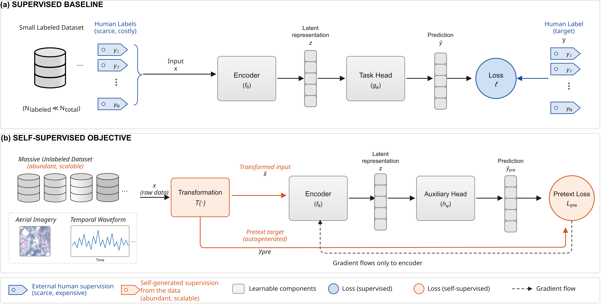
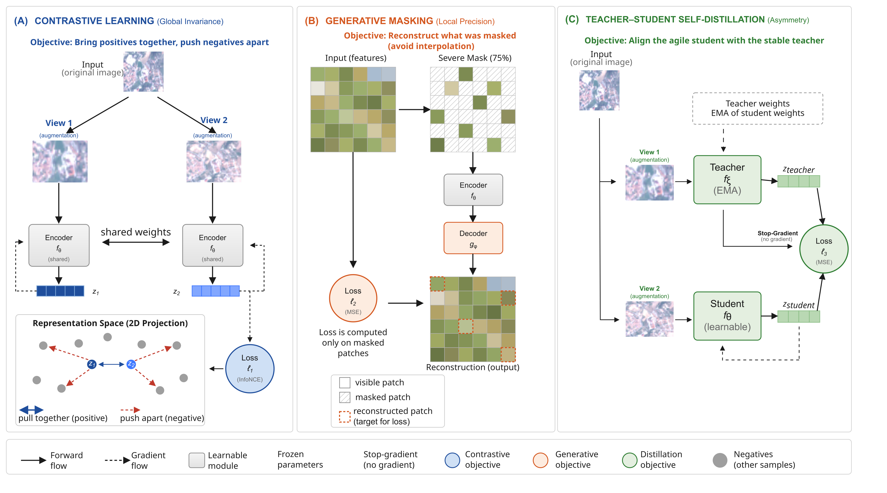
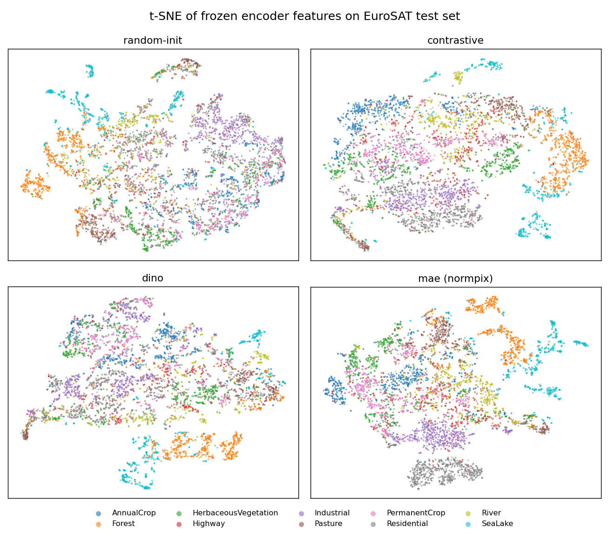

(A) · Global invariance
Contrastive learning
Two augmented views of the same sample are pulled together; views of every other sample are pushed apart. The only structure that survives is the identity shared across augmentations.
Labels are the bottleneck in deep learning — expensive, slow, and dependent on scarce expertise. Self-supervised learning removes them from the objective, deriving its targets from the data itself. This tutorial compares the three paradigms that dominate the field, on remote-sensing imagery and time series, using one fixed evaluation protocol.
“Which SSL paradigm should one choose?”
The shift
In supervised learning, every gradient that reaches the encoder passes through a human annotation — so the representation only learns what the labels reward, and the training set stops at the number of pairs someone could afford to label.
Self-supervised learning replaces the label with a target computed from the input itself. A pretext task defines a transformation that turns x into one or more views, plus a target that needs no annotation. Pretraining then runs over an unlabeled corpus that can be orders of magnitude larger.
The result is an encoder shaped by the phenomenon at large rather than by one annotated set — which is why it both adapts to new objectives and transfers to new domains.

Mechanisms
Every paradigm picks a transformation that destroys the low-level statistics which would make the objective trivially solvable. What survives is semantics. They differ in the form that invariance takes — agreement across views versus recoverability from context — and in the mechanism that stops the model from collapsing.

(A) · Global invariance
Two augmented views of the same sample are pulled together; views of every other sample are pushed apart. The only structure that survives is the identity shared across augmentations.
(B) · Local precision
A large fraction of the input is withheld and must be recovered from what remains. No second view, no negatives — the target is the missing part of the input itself.
(C) · Asymmetry
A student matches a teacher that is an exponential moving average of the student itself, with a stop-gradient on the teacher branch. Collapse is prevented by architecture, not repulsion.
Results from the notebooks
Both halves of the tutorial use the same downstream task and the same evaluation protocol — a frozen encoder, a linear probe, and accuracy. Holding the yardstick fixed is what makes the two tables comparable: the differences below are attributable to the modality, not the metric.
On EuroSAT imagery, contrastive learning wins (93.8%) and DINO trails at 84.6%. On UCR time series the order reverses — DINO leads at 93.9% while contrastive reaches 91.0%. The same three mechanisms, the same protocol, opposite conclusions. This is the tutorial's central point: the paradigm is chosen by the structure of the data, not by which method is most recent.
—
—
Encoders pretrained on growing fractions of the SeCo corpus, each for a fixed 20 000 steps, then probed on EuroSAT

Reference
Reading the table column-wise exposes which design decisions transfer between spatial and temporal data, and which the modality forces you to change.
| Contrastive | Masked autoencoder | Teacher–student | |
|---|---|---|---|
| Mechanism | InfoNCE over positive / negative pairs | Masked reconstruction | EMA target, stop-gradient, centering |
| Semantic goal | Global instance invariance | Local reconstruction | Invariant representations without negatives |
| Remote sensing | MoCo, SimCLR, SeCo, SaCo, PIMC | MAE, SatMAE, Scale-MAE | DINO, DINOv2, I-JEPA |
| Time series | TS2Vec, TS-TCC, TF-C | Ti-MAE, TimeMAE, SimMTM, PatchTST, Presto | HiMTM, DE-TSMCL, TS-JEPA |
| This tutorial · RS | 93.8% — best on EuroSAT | 91.3% | 84.6% |
| This tutorial · TS | 91.0% | 90.2% | 93.9% — best on UCR |
Hands-on
The time-series half mirrors the remote-sensing half one-to-one: the same three mechanisms, the same teaching pattern, the same evaluation. Each notebook runs end-to-end on Colab — with pretrained checkpoints when available, and a short live-training fallback when not.
git clone https://github.com/lstival/ssl_tutorial_sibgrapi2026.git cd ssl_tutorial_sibgrapi2026 pip install -r requirements.txt # launch — datasets and pretrained encoders download on first run cd notebooks/time_series # or notebooks/remote_sensing jupyter notebook 00_setup_and_data.ipynb
Pretrained encoders
Encoders pretrained offline on the large unlabeled corpora — Sentinel-2 tiles from SeCo for remote sensing, the pooled 128-dataset UCR archive for time series. The notebooks download these automatically; nothing needs to be fetched by hand.
| Checkpoint | Paradigm | Modality | Backbone | Pretraining corpus | Size |
|---|
from tutorial_rs import build_vit_s8, try_load_checkpoint, get_device device = get_device() encoder = build_vit_s8().to(device) # finds it in the clone, or downloads it from this repo on Colab try_load_checkpoint(encoder, "artifacts/remote_sensing/checkpoints", "contrastive_vit_s8.pt", device) encoder.eval() # frozen features for a linear probe feats = encoder(images) # (B, 384)
Citation
@inproceedings{stival2026ssl,
title = {Self-Supervised Learning: Contrastive, Masking, and Distillation Methods},
author = {Stival, Leandro and Zhang, Chao and da Silva Torres, Ricardo},
booktitle = {Proceedings of the 39th SIBGRAPI Conference on Graphics, Patterns and Images},
year = {2026},
publisher = {IEEE}
}